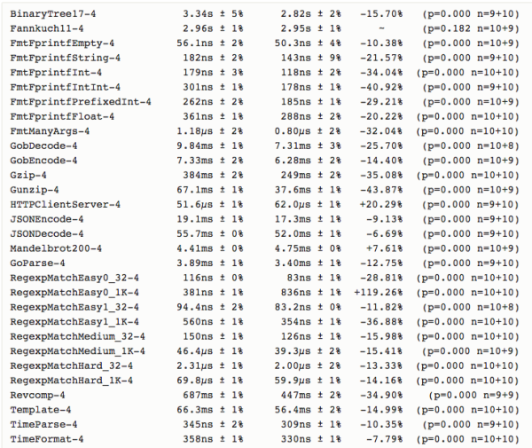
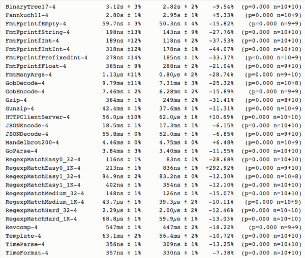
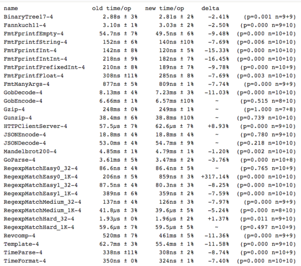

先说好，我并不认为go是世界上最好的语言！但是我觉得至今用着最爽觉得最牛逼的编译型语言(逃。。。）
那么说它牛逼，我们都在说些什么呢？
首先，说它牛逼并不是说已经达到了至今各方面最好甚至达到无可超越的境界，说实话我不认为任何一门语言真的达到这种程度。你要真的非要分出个高低，谷歌曾发布了一个研究报告，仔细比较了C++、Java、Scala和Go语言的性能。毫无疑问C++是四种语言中运行速度最快的，但是该报告同时也指出，优化代码相对困难，这需要相当的努力、熟练的水准，不是平均水平的程序员所能达到。而Go旨在兼顾性能的情况下消除这些限制，它仍然是年轻的，它是为了更简洁地，更高效地完成编码的工作，它自带垃圾回收，可以很安全很容易地写出并发的程序，并且Go还在不断成长，运行性能不断提高，编译速度正大幅度提升，GC延迟不断改善，runtime也不断优化。
近几年，Go在网络系统，微服务架构，高并发、通信交互复杂、大数据和分布式领域不断大放异彩，真正做到了解决现代编程的难题。例如以360消息推送系统为例，目前360消息推送系统服务于50+内部产品，万款开发平台App，实时长连接数亿量级，日独数十亿量级，1分钟内可以实现亿量级广播，日下发峰值百亿量级，400台物理机，3000多个实例分布在9个独立集群中，每个集群跨国内外近10个IDC；今日头条当前后端服务超过80%的流量是跑在 Go 构建的服务上。微服务数量超过100个，高峰 QPS 超过700万，日处理请求量超过3000亿；哔哩哔哩对外统一的API Gateway，对内的运营平台，以及各种数据总线、Proxy、微服务框架、IM等中间件和基础设施等全都是Go开发，是国内对微服务架构一个非常不错的实践，这样的案例很多，越来越多的团队和开发者在转向Go，为什么？我觉得一门语言真正的流行并不在于这个语言本身多么的牛逼，而是它能不能解决牛逼的问题。Go的大放异彩主要是它能在考虑人员成本，时间成本，稳定性，安全性和开发维护简单这些方面表现非常好，以及顺应了互联网和大数据环境下复杂网络系统，高并发应用的需求。
1，语言本身优势
2，跨平台且部署简单
跨平台这个特性简直没有更好，你可以不用有任何改动将运行在windows上的代码换在linux上运行，且可以跨平台编译，例如我们团队客户就是上帝，别人就是想用windows，我们你呢个咋的对吧，客户一会心情不好想上linux我们就得老老实实上，客户要单机部署，就去单机部署，客户要上60W终端的大项目，我们能拒绝上帝吗？
3，开发成本低快速迭代快
由于Go语言的特性，使用简单友好，我第一次使用Go开发项目时几乎没有什么学习成本（当然，后来慢慢还是要好好理解很多特性，学会避开很多坑的），项目很快完成功能，而且后期bug相比之前写C/C++减少了很多。而且编译速度快，及时跨平台部署也只需要加入编译参数就可轻松搞定。关键是代码风格非常一直，对于后期维护和扩展非常好，况且目前互联网公司人员流动还是非常大的，能不能保证项目持续稳定成长非常重要。
4，很简单可以实现高并发业务
开发出能充分利用硬件资源的应用程序是一件很难的事情，现代计算机都拥有多个核，但是大部分编程语言都没有有效的工具让程序可以轻易利用这些资源，一些语言需要写大量的线程同步代码来利用多个核，很容易导致错误，但Go在语言级别实现并发，这是最大的基础，我们开发者不必再去关心并发逻辑的实现，而是在适当的时候将一部分代码go出去即可，这些并发逻辑会有内置的runtime管理。简直是并发业务的神级杀手。根据之前开发的一个内部API缓存系统压力测试，单机版（四核，8G，3.0GHz）主键查询可达到10WQPS，并且限制是在带宽，带宽增大的话，远不止10W。
5，语言在不断改进成长
一门语言不可能是完美的，但重在一直改变并向前兼容，Go社区不断发展，开发团队也一直在做语言上的优化，运行性能不断提高，编译速度正大幅度提升，GC延迟不断改善，runtime也不断优化，各种标准库支持和优化不断丰富。 下面贴下1.8和以往版本比较：
  人生苦短，我用Golang！